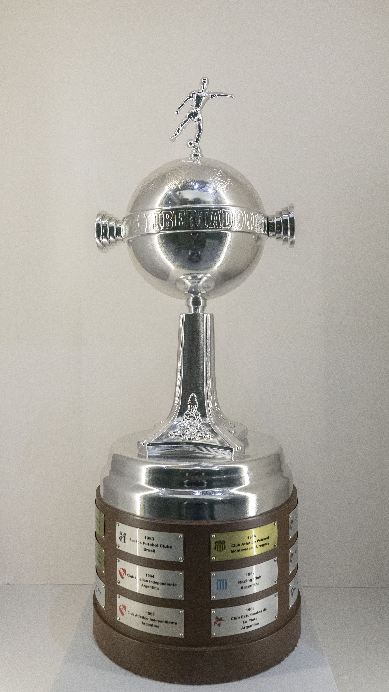

O Internacional tem uma relação forte, intensa e emocional com a Copa Libertadores. O clube foi finalista em 1980, viveu frustrações continentais nas décadas seguintes e, em 2006, finalmente transformou a obsessão em taça. Quatro anos depois, voltou ao topo da América e confirmou uma das eras mais vitoriosas de sua história.
As duas conquistas nasceram em contextos diferentes, mas têm pontos em comum. Ambas passaram pelo Beira-Rio como centro de energia, tiveram elencos experientes, atacantes decisivos, técnicos marcantes e uma torcida que fez da Avenida Padre Cacique um dos ambientes mais fortes do continente.
Em 2006, o Colorado de Abel Braga, Fernandão, Rafael Sóbis, Tinga, entre outros ícones da época venceu o São Paulo na final e levantou a Libertadores pela primeira vez. Em 2010, o time de D’Alessandro, Taison, Leandro Damião, Guiñazú, como exemplo do time vencedor, bateu o Chivas Guadalajara e conquistou o bicampeonato.
A força continental do Internacional também se conecta à tradição colorada em mata-matas nacionais. Antes de conquistar a América, o clube já havia escrito capítulos importantes em competições eliminatórias, como mostra a campanha do título na Copa do Brasil de 1992. No cenário sul-americano, o peso dessas conquistas fica ainda maior quando colocado dentro da história da Libertadores.
O título de 2006 encerrou uma longa espera e abriu caminho para a conquista do Mundial de Clubes contra o Barcelona. O título de 2010 confirmou o Inter como uma das grandes potências brasileiras da década e colocou o clube em um grupo seleto de bicampeões continentais.
Abel, Fernandão, Sóbis e a primeira América
Em uma campanha que mudou o tamanho internacional do clube. O Colorado já tinha tradição nacional, havia sido campeão brasileiro invicto em 1979 e vice da Libertadores em 1980, mas ainda faltava conquistar a América. Em 2006, sob comando de Abel Braga, essa lacuna foi preenchida com uma trajetória forte, madura e marcada por personagens eternos.
A campanha teve 14 jogos, com oito vitórias, cinco empates, apenas uma derrota, 24 gols marcados e 10 sofridos. O Inter passou pela fase de grupos em primeiro lugar e com a segunda melhor campanha geral. Depois, eliminou Nacional, LDU, Libertad e São Paulo. A caminhada não foi perfeita, mas foi extremamente competitiva: o time soube vencer fora, reagir em casa, administrar vantagem e crescer nos jogos decisivos.
A base colorada tinha Clemer no gol; Ceará, Índio, Bolívar, Fabiano Eller e Jorge Wagner na defesa; Edinho, Fabinho, Tinga e Alex no meio; Fernandão como capitão e cérebro ofensivo; Rafael Sóbis como atacante explosivo; além de peças decisivas como Rentería, Iarley, Michel, Rubens Cardoso e Adriano Gabiru. Era um elenco equilibrado, com liderança, força física, boa bola parada, mobilidade no ataque e enorme identificação com a torcida.
Campanha completa de 2006
Fase de grupos:
- Maracaibo 1 x 1 Internacional
Gol: Ceará e Maldonado empatou para o Maracaibo. - Internacional 3 x 0 Nacional-URU
Gols: Michel, Fernandão e Rubens Cardoso. - Pumas 1 x 2 Internacional
Gols: Rentería e Fernandão. López marcou para o Pumas. - Internacional 3 x 2 Pumas
Gols: Michel, Fernandão e Adriano Gabiru. Galindo e Botero marcaram para o Pumas. - Nacional-URU 0 x 0 Internacional
- Internacional 4 x 0 Maracaibo
Gols: Adriano Gabiru, Bolívar, Michel e Rentería.
Oitavas de final:
- Nacional-URU 1 x 2 Internacional
Gols: Jorge Wagner e Rentería. Vanzini marcou para o Nacional. - Internacional 0 x 0 Nacional-URU
Quartas de final:
- LDU 2 x 1 Internacional
Gol: Jorge Wagner. - Internacional 2 x 0 LDU
Gols: Rafael Sóbis e Rentería. O Inter avançou pelo placar agregado de 3 x 2.
Semifinal:
- Libertad 0 x 0 Internacional
- Internacional 2 x 0 Libertad
Gols: Alex e Fernandão.
Final:
- São Paulo 1 x 2 Internacional
Gols: Rafael Sóbis duas vezes. Edcarlos marcou para o São Paulo. - Internacional 2 x 2 São Paulo
Gols: Fernandão e Tinga. Fabão e Lenílson marcaram para o São Paulo. O Inter foi campeão pelo placar agregado de 4 x 3.
A fase de grupos: liderança, viradas e Beira-Rio
O Inter estreou fora de casa, contra o Maracaibo, na Venezuela. Ceará abriu o placar no início do segundo tempo, mas Maldonado empatou no fim. O 1 a 1 não foi o início ideal, mas deu ao time um ponto importante como visitante.
A primeira vitória veio no Beira-Rio, contra o Nacional, rival que carregava um peso especial para a torcida colorada por causa da final perdida em 1980. O Inter venceu por 3 a 0, com gols de Michel, Fernandão e Rubens Cardoso. Foi uma vitória simbólica: o clube começava a exorcizar velhos fantasmas continentais.
No México, contra o Pumas, o Inter saiu atrás, mas virou com Rentería e Fernandão. A vitória por 2 a 1 confirmou que o time tinha repertório fora de casa. Na volta, no Beira-Rio, viveu uma das grandes partidas da fase de grupos. O Pumas abriu 2 a 0 ainda no primeiro tempo, com Galindo e Botero, mas o Colorado reagiu com Michel, Fernandão e Adriano Gabiru, vencendo por 3 a 2 em uma noite de enorme conexão entre campo e arquibancada.
Depois do empate por 0 a 0 com o Nacional em Montevidéu, o Inter fechou a fase de grupos com autoridade: 4 a 0 sobre o Maracaibo, gols de Adriano Gabiru, Bolívar, Michel e Rentería. A equipe terminou invicta na chave, com 14 pontos, 13 gols marcados e apenas quatro sofridos. A campanha indicava que o Inter tinha força suficiente para brigar pela taça.
O fantasma de 1980
Nas oitavas, o adversário voltou a ser o Nacional. O confronto tinha peso histórico porque o clube uruguaio havia vencido o Inter na decisão da Libertadores de 1980. Em Montevidéu, o Nacional saiu na frente com Vanzini, mas Jorge Wagner empatou em cobrança de falta precisa. Depois, Rentería marcou um golaço, com direito a lençol no marcador e finalização forte, virando o jogo para 2 a 1.
Na volta, no Beira-Rio, o Inter segurou o 0 a 0 e avançou. A classificação foi mais do que um passo no mata-mata: foi uma resposta emocional a uma ferida antiga. O time de Abel Braga começava a construir uma campanha com cara de Libertadores, sabendo jogar com placar, ambiente e memória.
Altitude e reação no Gigante
Nas quartas, o Inter enfrentou a LDU. O jogo de ida aconteceu em Quito, na altitude, e terminou com vitória equatoriana por 2 a 1. Jorge Wagner marcou o gol colorado, que seria importante no agregado. A derrota acabou com uma longa invencibilidade do Inter, mas não tirou a equipe da disputa.
A volta no Beira-Rio foi uma das noites mais intensas da campanha. O Inter precisava vencer por 1 a 0 para avançar, mas fez mais. Rafael Sóbis abriu o placar em jogada construída com Fernandão, cortando para a direita e batendo forte. Depois, Rentería saiu do banco e marcou por cobertura, fazendo 2 a 0. No último lance, Clemer ainda defendeu uma falta perigosa e garantiu a vaga.
Foi uma classificação de arquibancada, pressão e personalidade. O Beira-Rio virou caldeirão, e o Inter respondeu como time grande. A dupla Fernandão e Rafael Sóbis começou ali a ganhar o contorno definitivo que teria na reta final.
A volta à final continental
Na semifinal, o adversário foi o Libertad, do Paraguai. A ida, no Defensores del Chaco, terminou 0 a 0. O jogo teve pressão paraguaia, chances dos dois lados e boa atuação defensiva colorada. O Inter levou a decisão para Porto Alegre com a vaga aberta.
No Beira-Rio, a classificação veio no segundo tempo. Abel Braga mexeu no time e colocou Rentería, recuando Alex para organizar o meio com mais liberdade. Logo depois, Alex acertou um belo chute de fora da área e abriu o placar. Minutos mais tarde, Rafael Sóbis acionou Fernandão, que dominou e bateu de canhota para fazer 2 a 0. O Inter controlou o resultado e voltou a uma final de Libertadores depois de 26 anos.
Morumbi e taça no Beira-Rio
A decisão de 2006 foi brasileira. De um lado, o Internacional, ainda em busca da primeira Libertadores. Do outro, o São Paulo, campeão da América e do mundo em 2005, com Rogério Ceni, Lugano, Fabão, Mineiro, Danilo, Júnior, Aloísio e Leandro. Era uma final de enorme peso, entre dois dos melhores times do país naquele momento.
O primeiro jogo foi no Morumbi, em 9 de agosto. O São Paulo tinha a força do mando, mas Rafael Sóbis transformou a noite em um dos maiores capítulos da história colorada. O atacante marcou duas vezes no segundo tempo. No primeiro gol, arrancou e finalizou com frieza. No segundo, aproveitou rebote após cabeceio de Fernandão na trave. Edcarlos descontou para o São Paulo, mas o Inter venceu por 2 a 1 fora de casa.
A volta aconteceu em 16 de agosto, no Beira-Rio. Fernandão abriu o placar no primeiro tempo, fazendo explodir a torcida. Fabão empatou no início da segunda etapa. Tinga recolocou o Inter na frente, mas foi expulso pouco depois. Lenílson empatou para o São Paulo nos minutos finais, mas o placar de 2 a 2 confirmou o título colorado pelo agregado de 4 a 3.
A América era vermelha. O Inter, enfim, conquistava a Libertadores.
Destaques da campanha de 2006
Fernandão foi o líder técnico, emocional e simbólico do título. Marcou cinco gols na campanha, incluindo um na finalíssima contra o São Paulo, e participou de lances decisivos com assistências, pivôs, movimentação e liderança. Mais do que centroavante, era um organizador ofensivo e capitão de enorme influência.
Rafael Sóbis foi o nome mais explosivo da reta final. Marcou três gols na campanha, todos em momentos gigantes: um contra a LDU, nas quartas, e dois contra o São Paulo, no Morumbi, na primeira partida da decisão. Sua atuação na final de ida virou uma das maiores exibições individuais de um jogador colorado em Libertadores.
Rentería foi o talismã. Fez quatro gols, incluindo viradas e classificações importantes. Michel também marcou três vezes e foi muito útil na fase de grupos. Tinga fez o gol do título no Beira-Rio. Alex marcou na semifinal contra o Libertad. Jorge Wagner foi decisivo em bolas paradas e pela esquerda. Clemer teve defesas importantes, especialmente contra a LDU.
Abel Braga foi o comandante perfeito para aquele grupo. O Inter de 2006 sabia ser intenso, mas também sabia sofrer. Tinha técnica, mas tinha casca. Atacava com Fernandão e Sóbis, mas protegia bem sua área com Edinho, Fabinho, Bolívar, Índio, Fabiano Eller e Clemer. Era um time com alma de Libertadores.
O bicampeonato
Quatro anos depois do primeiro título, voltou a conquistar a América. A Libertadores de 2010 teve outra construção. O time começou com Jorge Fossati, mudou de comando durante a campanha e terminou campeão com Celso Roth. Foi uma trajetória de ajustes, superação, uso inteligente do regulamento e força absoluta dentro do Beira-Rio.
A campanha teve 14 jogos, com oito vitórias, três empates, três derrotas, 20 gols marcados e 12 sofridos. O Inter foi invicto na fase de grupos, venceu todos os jogos em casa na campanha e usou o gol fora de casa de forma decisiva nas oitavas, quartas e semifinais. Na final, bateu o Chivas duas vezes: no México e em Porto Alegre.
O elenco misturava campeões de 2006, novos líderes e jovens decisivos. Bolívar, Índio, Fabiano Eller e Rafael Sóbis conectavam o time ao primeiro título. D’Alessandro era o craque técnico e emocional. Giuliano virou o homem dos gols decisivos. Taison dava velocidade. Alecsandro era referência ofensiva. Guiñazú e Sandro sustentavam o meio-campo. Kléber e Nei davam amplitude pelas laterais. Renan assumiu o gol na reta final. Leandro Damião apareceu no momento certo.
Campanha da Libertadores de 2010
Fase de grupos:
- Internacional 2 x 1 Emelec
Gols: Nei e Alecsandro. - Deportivo Quito 1 x 1 Internacional
Gol: Giuliano. - Cerro-URU 0 x 0 Internacional
- Internacional 2 x 0 Cerro-URU
Gols: Ibañez, contra, e Alecsandro. - Emelec 0 x 0 Internacional
- Internacional 3 x 0 Deportivo Quito
Gols: Andrezinho, Bolívar e Giuliano.
Oitavas de final:
- Banfield 3 x 1 Internacional
Gol: Kléber, James Rodríguez, Battión e Fernández marcaram para o Banfield. - Internacional 2 x 0 Banfield
Gols: Alecsandro e Walter. O Inter avançou pelo critério do gol fora de casa.
Quartas de final:
- Internacional 1 x 0 Estudiantes
Gol: Sorondo. - Estudiantes 2 x 1 Internacional
Gol: Giuliano. Leandro González e Enzo Pérez marcaram para o Estudiantes. O Inter avançou pelo critério do gol fora de casa.
Semifinal:
- Internacional 1 x 0 São Paulo
Gol: Giuliano. - São Paulo 2 x 1 Internacional
Gol: D’Alessandro. Alex Silva e Ricardo Oliveira marcaram para o São Paulo. O Inter avançou pelo critério do gol fora de casa.
Final:
- Chivas 1 x 2 Internacional
Gols: Giuliano e Bolívar. Bautista marcou para os mexicanos. - Internacional 3 x 2 Chivas
Gols: Rafael Sóbis, Leandro Damião e Giuliano. Marco Fabián e Omar Bravo marcaram para o Chivas.
Invencibilidade e liderança
O Inter começou a Libertadores de 2010 no Beira-Rio, contra o Emelec. A partida teve chuva, pressão e virada. Os equatorianos abriram o placar, mas Nei empatou com um golaço de fora da área, e Alecsandro marcou o gol da vitória por 2 a 1. Era a primeira vez que o Inter estreava com vitória na Libertadores.
Na altitude de Quito, contra o Deportivo Quito, o Colorado empatou por 1 a 1, com gol de Giuliano. Depois, ficou no 0 a 0 com o Cerro, no Uruguai, em jogo disputado em Rivera, com grande presença colorada. No Beira-Rio, venceu o Cerro por 2 a 0, com gol contra de Ibañez e gol de Alecsandro.
Na quinta rodada, empatou por 0 a 0 com o Emelec em Guayaquil. Na última rodada, precisava confirmar a liderança contra o Deportivo Quito e fez isso com autoridade: 3 a 0, gols de Andrezinho, Bolívar e Giuliano. O Inter fechou a fase de grupos invicto, com 12 pontos, oito gols marcados e dois sofridos.
Oitavas de final: virada no Beira-Rio
O Inter enfrentou o Banfield, campeão argentino do Apertura de 2009. O jogo de ida, na Argentina, foi difícil. O Banfield venceu por 3 a 1, com gols de James Rodríguez, Battión e Fernández. Kléber marcou para o Inter, e esse gol fora de casa acabou sendo decisivo.
Na volta, no Beira-Rio, o Colorado precisava vencer por 2 a 0 para avançar. A torcida lotou o estádio e empurrou desde o início. Alecsandro abriu o placar ainda no primeiro tempo. Na segunda etapa, Walter marcou de cabeça e fez 2 a 0. Com o agregado em 3 a 3, o Inter avançou pelo gol fora de casa. Foi uma classificação que deu força emocional ao grupo e reforçou a importância do Beira-Rio naquela campanha.
Quartas de final: o gol salvador de Giuliano
O adversário foi o Estudiantes, campeão da Libertadores de 2009. Era um confronto de alto risco. No jogo de ida, em Porto Alegre, o Inter venceu por 1 a 0 com gol de cabeça de Sorondo, após cobrança de falta de Andrezinho. A vantagem era pequena, mas importante.
Na volta, na Argentina, o Estudiantes abriu 2 a 0 ainda no primeiro tempo, com Leandro González e Enzo Pérez. O resultado eliminava o Inter. A partida ficou tensa, com pressão local e muita dificuldade para construir. Aos 43 minutos do segundo tempo, Giuliano apareceu. Após assistência de Andrezinho, marcou o gol colorado e colocou o Inter na semifinal pelo critério do gol fora de casa. Foi um dos gols mais importantes da campanha.
Semifinal: Ruas de Fogo e vaga pelo regulamento
A semifinal colocou novamente Internacional e São Paulo frente a frente, quatro anos depois da final de 2006. O primeiro jogo foi no Beira-Rio e ficou marcado pelo ambiente criado pela torcida. A recepção ao ônibus colorado, conhecida como Ruas de Fogo, transformou a entrada do estádio em um túnel vermelho de fumaça, sinalizadores e cânticos.
Dentro de campo, o Inter dominou boa parte da partida. D’Alessandro comandou o jogo, Taison deu velocidade, e Giuliano saiu do banco para decidir. O meia marcou o gol da vitória por 1 a 0 no segundo tempo, dando ao Inter uma vantagem curta, mas valiosa.
Na volta, no Morumbi, o São Paulo abriu o placar com Alex Silva. O Inter empatou com D’Alessandro, gol que mudava completamente o confronto pelo critério do gol fora. Ricardo Oliveira ainda fez 2 a 1 para o São Paulo, mas o placar classificou o Colorado. O Inter perdeu o jogo, mas venceu a eliminatória pelo regulamento e voltou a uma final continental.
Final: vitória no México e festa no Beira-Rio
A final de 2010 foi contra o Chivas Guadalajara. Por ser mexicano, o Chivas não poderia representar a Conmebol no Mundial de Clubes, mas isso não diminuiu o peso esportivo da decisão. O clube mexicano havia eliminado adversários fortes e chegava embalado. O Inter, por sua vez, queria confirmar o bicampeonato.
O jogo de ida foi no Estádio Omnilife, em Guadalajara, em campo sintético e diante de mais de 50 mil torcedores. O Chivas saiu na frente com gol de Bautista, no fim do primeiro tempo. O Inter voltou melhor na segunda etapa. Giuliano empatou de cabeça após cruzamento de Kléber. Depois, D’Alessandro levantou bola na área, Índio escorou, e Bolívar mergulhou para fazer o gol da virada. Vitória colorada por 2 a 1 fora de casa.
A finalíssima aconteceu em 18 de agosto de 2010, no Beira-Rio. O Chivas abriu o placar com Marco Fabián, em bonito voleio, igualando o agregado naquele momento. Mas o Inter não se abalou. No segundo tempo, D’Alessandro participou da jogada, Kléber cruzou, e Rafael Sóbis empatou. Depois, Leandro Damião, recém-entrado, arrancou do campo de defesa, aplicou um drible da vaca e virou a partida. Nos minutos finais, Giuliano marcou com categoria, encobrindo o goleiro. Omar Bravo ainda descontou, mas o jogo terminou 3 a 2. O Internacional era bicampeão da Libertadores.
Destaques da campanha de 2010
D’Alessandro foi o grande maestro do título. O argentino organizou o jogo, desequilibrou em conduções, passes, bolas paradas e liderança. Foi decisivo contra Banfield, São Paulo e Chivas, além de assumir o protagonismo técnico da equipe. Em 2010, consolidou sua condição de ídolo histórico do Internacional.
Giuliano foi o jogador dos gols decisivos. Marcou seis vezes na campanha e terminou como artilheiro colorado na Libertadores. Fez gol contra o Deportivo Quito, marcou na vitória sobre o Deportivo Quito no Beira-Rio, decidiu contra Estudiantes, fez o gol da vitória contra o São Paulo na semifinal, empatou a final de ida contra o Chivas e marcou também na finalíssima.
Rafael Sóbis voltou ao Inter para ser bicampeão e marcou na decisão do Beira-Rio. O atacante já havia sido herói em 2006 e, em 2010, reforçou seu status de Senhor Libertadores colorado. Leandro Damião entrou na final e marcou um gol que virou símbolo de predestinação. Alecsandro foi importante ao longo da campanha, especialmente na fase de grupos e contra o Banfield.
Bolívar foi capitão e marcou na final de ida. Índio manteve a força defensiva. Guiñazú e Sandro deram intensidade ao meio-campo. Kléber e Nei foram armas pelos lados. Taison levou velocidade e profundidade. Renan assumiu o gol na reta decisiva. Celso Roth reorganizou o time após a saída de Jorge Fossati e conduziu o grupo ao título com uma estrutura mais direta, competitiva e madura.
O estádio como personagem dos títulos
O Beira-Rio é parte central da história Colorada na Libertadores. Em 2006, o estádio foi o lugar da virada contra o Pumas, da classificação dramática contra a LDU, da vitória sobre o Libertad e da confirmação do primeiro título contra o São Paulo. Em 2010, foi palco da campanha perfeita como mandante, da virada contra o Banfield, da vantagem contra o Estudiantes, da Ruas de Fogo contra o São Paulo e da finalíssima contra o Chivas.
Em 2006, a conexão entre time e torcida apareceu de forma muito clara. Contra o Pumas, o Inter saiu perdendo por 2 a 0 e virou por 3 a 2. Contra a LDU, o Beira-Rio pressionou até o time encontrar os gols de Sóbis e Rentería. Contra o Libertad, a equipe sofreu no início do segundo tempo, mas a torcida sustentou o ambiente até Alex e Fernandão decidirem. Na final contra o São Paulo, mais de 50 mil colorados empurraram o time no empate por 2 a 2 que valeu a taça.
Em 2010, o estádio ganhou ainda mais contorno de caldeirão continental. O Inter venceu todos os jogos em casa naquela Libertadores. O 2 a 0 sobre o Banfield foi um exemplo perfeito de arquibancada e time trabalhando juntos. O 1 a 0 contra o Estudiantes construiu vantagem sobre o campeão vigente. O 1 a 0 contra o São Paulo teve a famosa Ruas de Fogo antes da bola rolar. E o 3 a 2 sobre o Chivas fechou a campanha com uma das maiores festas da história colorada.
A torcida colorada transformou a Libertadores em evento coletivo. Havia peregrinação ao Beira-Rio, apoio em aeroporto, invasão em jogos fora, cânticos incessantes e uma atmosfera de pertencimento. A Libertadores do Inter não foi apenas vencida por jogadores. Foi vivida por uma comunidade inteira.
Os maiores jogadores nos títulos
Fernandão é o grande símbolo da primeira conquista. Capitão, líder, artilheiro colorado da campanha de 2006 com cinco gols e autor de gol na finalíssima, ele representou como poucos a alma daquele time. Sua inteligência fora da área, sua capacidade de organizar o ataque e sua liderança fazem dele o nome central da Libertadores de 2006.
Rafael Sóbis atravessa as duas conquistas como personagem continental. Em 2006, decidiu no Morumbi com dois gols contra o São Paulo e marcou contra a LDU. Em 2010, voltou ao clube e fez gol na final contra o Chivas. Poucos jogadores têm ligação tão forte com finais de Libertadores pelo Inter.
D’Alessandro é o grande nome técnico de 2010. Foi o cérebro da equipe, o jogador capaz de organizar, acelerar, provocar desequilíbrio e liderar emocionalmente. O título continental ampliou sua dimensão como um dos maiores estrangeiros da história colorada.
Giuliano foi o talismã decisivo do bicampeonato. Seus seis gols em 2010 apareceram em momentos enormes, principalmente contra Estudiantes, São Paulo e Chivas. Bolívar também merece lugar especial: campeão em 2006, capitão em 2010 e autor de gol na final de ida contra o Chivas.
Clemer teve papel fundamental em 2006, especialmente contra a LDU. Tinga marcou o gol que colocou o Inter novamente em vantagem na final contra o São Paulo, completam a galeria de personagens colorados.
A representatividade das conquistas
O título de 2006 representa a libertação continental. O Inter já havia chegado perto em 1980, já tinha tradição nacional, já era um clube gigante, mas faltava a Libertadores. A vitória sobre o São Paulo, então campeão do mundo, colocou o Colorado no topo da América e abriu caminho para o Mundial contra o Barcelona.
Além de ter visto seu maior rival histórico ter conquistado duas vezes, com o Grêmio sendo campeão em 1983 e 1995.
O título de 2010 representa a confirmação de uma era. O Inter mostrou que 2006 não era um ponto isolado. Voltou a vencer a América com outro elenco, outro técnico na reta final e novos protagonistas. Foi uma conquista de maturidade, regulamento bem utilizado, força em casa e gols decisivos fora.
Juntas, as duas taças explicam o período mais internacional da história colorada. Entre 2006 e 2010, o Inter conquistou duas vezes a América, um Mundial de Clubes, uma Sul-Americana e uma Recopa Sul-Americana. Foi uma sequência que colocou o clube definitivamente entre os grandes nomes do continente.
Por isso, falar dos títulos do Internacional na Libertadores é falar de um clube que transformou a competição continental em parte essencial de sua identidade. O Colorado venceu com capitão eterno, atacante decisivo, camisa pesada e torcida em estado de combustão. Em 2006 e 2010, o Inter não apenas conquistou taças. Conquistou um lugar definitivo na história do futebol sul-americano.